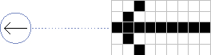

Markers
A marker is a two-dimensional object typically used to indicate the position of an object (or part of an object) in a window. A marker is defined by theTQ3MarkerDatadata type, which contains a bitmap and a location, together with an optional set of attributes. The bitmap specifies the image that is to be drawn on top of a rendered scene at the specified location. The marker is drawn perpendicular to the viewing vector, aligned with the window, with its origin located at the specified location. A marker is always drawn with the same size, no matter which rotations, scalings, or other transformations might be active. Figure 4-20 shows a marker.
typedef struct TQ3MarkerData { TQ3Point3D location; long xOffset; long yOffset; TQ3Bitmap bitmap; TQ3AttributeSet markerAttributeSet; } TQ3MarkerData;
Field Description
location- The origin of the marker.
xOffset- The number of pixels, in the horizontal direction, by which to offset the upper-left corner of the marker from the origin specified in the
locationfield.yOffset- The number of pixels, in the vertical direction, by which to offset the upper-left corner of the marker from the origin specified in the
locationfield.bitmap- A bitmap. Each bit of this bitmap corresponds to a pixel in the rendered image.
markerAttributeSet- A set of attributes for the marker. You can use these attributes to specify the color, transparency, or other attributes of the bits in
bitmapthat are set to 1. The value in this field isNULLif no marker attributes are defined.